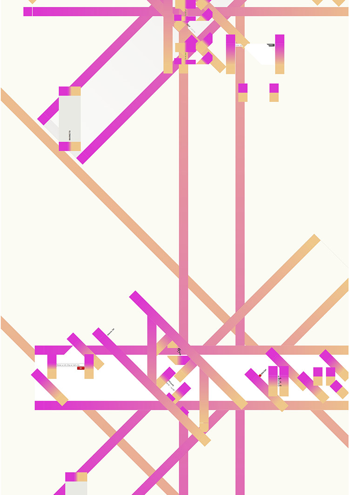

---

layout: page
title: This is Important
author: Michael McDermott &amp; Ojus Doshi
description: The nature of CSS makes the visual form of a website extremely tenuous. One small CSS change can render a well known website unrecognizable, thereby creating new visual form and revealing the underlying structure of the site. Our explorations insert a few lines of CSS into common websites like Google, Facebook, &amp; Yahoo via a manipulated, open-source Chrome extension called &ldquo;textfreestyles&rdquo;. Using a default A2 size page as a frame or cropping tool, we selected interesting compositions for printed output. A2 (16.5" x 23.4"), digitally printed, 2014.
category: project
printready: true

---


 




